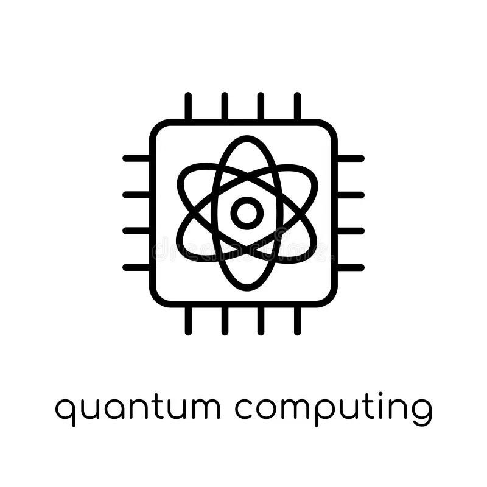

L'entanglement quantistico, o correlazione quantistica, è un fenomeno quantistico per il quale due o più sistemi fisici (come particelle subatomiche, atomi, molecole o altri oggetti quantistici) che condividono lo stesso stato quantico possono formare un unico sistema che non può essere descritto dalle singole proprietà dei sistemi che lo compongono (in termini fisico-matematici "non separabile"). Questi sistemi (sottosistemi) si definiscono correlati (in inglese entangled: intrecciati) e la misura di una proprietà di uno determina simultaneamente il valore anche per gli altri.